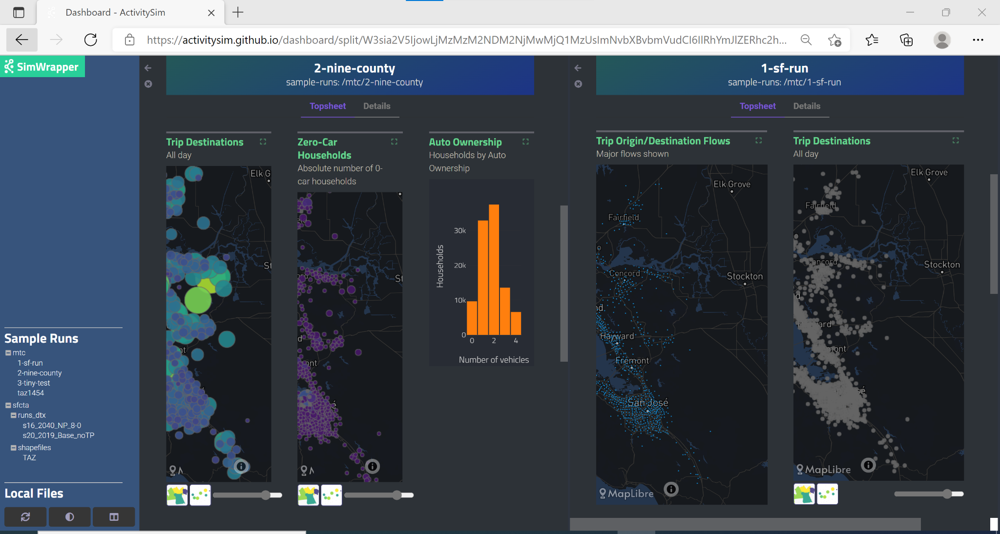

Visualization#
Visualization capabilities are provided with SimWrapper, a standalone browser-based software that creates interactive, graphical visualizations of ActivitySim outputs. SimWrapper builds graphs and other visualization components from CSV summary tables that are produced by the summarize model step. Once the model run is complete, Simwrapper can be started and stopped at any time, independent of ActivitySim to visualize outputs. The tool currently allows users to view dashboards for multiple model runs side-by-side in the browser. The ability to compute and visualize the differences between two model runs is a planned future enhancement.
To use set up the summarize model to produce tables for SimWrapper, add summarize to the list of models in configs_mp/settings.yaml and add the following files to the config directory:
summarize.yaml: configuration for the summarize model stepsummarize.csv:expression file containing the final aggregations that will be generated at the end of the model runsummarize_preprocessor.csv: intermediate expression file used to add columns, including skim summaries, to thetrips_mergedpipeline table
In the output directory, add a new summarize directory, which must contain:
dashboard-1-summary.yaml: configuration for the layout and formatting of charts and other objects in the dashboardAdditional
dashboard-\*.yamlfiles may be used to configure additional dashboard tabstopsheet.yaml: configuration for calculated statistics in the ‘At-a-Glance’ table at the top of the dashboardThe
/output/summarizedirectory may also contain one or more .geojson files to support map-based visualizations in the dashboard.
At present, example versions of all of the items above are located in the prototype MTC example model: /activitysim/examples/prototype_mtc. Complete documentation for configuring dashboards is available in the SimWrapper Docs.
Configure the Summarize Model#
Summary Expressions#
Example configuration files for the summarize model step (as listed above) are included in prototype MTC example. These files will need to be adjusted to produce customized SimWrapper dashboards. These files are structured as standard ActivitySim expression (CSV) and configuration (YAML) files. More detailed information about configuration of the summarize model step is available in the Models documentation.
You may wish to manipulate the default expression files to suit your particular needs. Expression files are formatted as CSVs and structured according to ActivitySim conventions with three columns:
Description: Brief description of expression. Non-functional and may be left blank.Output: Name of expression output. Will be used to name either the CSV or local variable storing the expression output.Expression: Python expression that will be evaluated to produce the output.
Rows with output values that begin with an alphanumeric character will be saved to a CSV (e.g., output_name –> output_name.csv). These expressions must yield a Pandas Series, DataFrame, or another object with a to_csv method.
Rows with output values that begin with underscores (e.g., _output_name) will be stored as temporary variables in the local namespace so they can be used in following expressions. Expressions defining temporary variables can produce any data type. Users are encouraged to follow the ActivitySim convention using capitals to denote constants (e.g., _TEMP_CONSTANT), though this convention is not formally enforced for summarize expressions.
Summarize expressions can make use of several convenience functions for binning numeric Pandas Series’ into quantiles, equal intervals, or manually-specified ranges. These functions are available in the local namespace used to evaluate summarize expressions (as well as for preprocessing the trips_merged table; see below), so they can be used directly in summary expressions. These functions include:
quantiles: Construct quantiles from a Series given a number of bins.spaced_intervals: Construct evenly-spaced intervals from a Series given a starting value and bin size.equal_intervals: Construct equally-spaced intervals across the entire range of a Series.manual_breaks: Classify numeric data in a Series into manually-defined bins.
For example population density quintiles could be calculated with the expression:
quantiles(data=land_use.TOTPOP/land_use.TOTACRE, bins:5, label_format:'{rank}')
The label_format parameter uses f-string formatting to specify how bins should be labeled. Several named variables are automatically available in the local namespace for use in labels:
left: Left extent, or minimum, of the bin rangemid: Center of the bin rangeright: Right extent, or maximum, of the bin rangerank: Numeric rank of the bin, with 1 being the lowest rank
By default, bins are labeled with their extents using the following f-string: '{left:,.2f} - {right:,.2f}'. The '{rank}' option demonstrated above would label each bin with its ordinal rank. Numeric labels are converted to numeric data types, if possible.
Examples of each summarize function are included in the summarize.csv expression file for the prototype MTC example. Consult the docstrings for each function in the /activitysim/abm/models/summarize.py module for complete specification of parameters.
Preprocessing#
Pipeline tables available for summarization can be preprocessed to include columns that bin or aggregate existing columns into categories or add skim data related to trips or tours. Preprocessing is configured both in summarize.yaml and summarize_preprocessor.csv.
Binning and aggregation operations that should take place before expressions are calculated, in order to produce a new column in a pipeline table, can be specified in summarize.yaml. This can be useful for reducing clutter and redundancy in the summary expressions file.
Binning during the preprocessing stage uses the same convenience functions available for expression files but specifies them in the configuration YAML. To calculate manually-defined income categories, for example, the YAML would include:
persons_merged: # Pipeline table on which to operate
BIN:
# Manually-specified bins
- column: income # Column on which to operate
label: income_category # New column to make
type: manual_breaks # Binning function
bin_breaks: # Must include lower and upper extents;
- 0 # (One more value than the number of bins)
- 25000
- 50000
- 75000
- 100000
- 999999
bin_labels: # (optional)
- Very Low Income ($0-$25k)
- Low Income ($25k-$50k)
- Medium Income ($50k-$75k)
- High Income ($75k-$100k)
- Very High Income (>$100k)
Example uses of each binning function are included in the summarize.yaml configuration file in the prototype MTC example.
Table columns can also be aggregated, or “remapped,” during the preprocessing stage. Aggregations are specified in the configuration YAML using a key-value structure:
trips_merged: # Pipeline table on which to operate
AGGREGATE:
- column: major_trip_mode # Column on which to operate
label: major_trip_mode # New column to make
map:
DRIVEALONEFREE: SOV # Keys: Existing values to map from
DRIVEALONEPAY: SOV # Values: New values to map to
SHARED2FREE: HOV
SHARED2PAY: HOV
SHARED3FREE: HOV
SHARED3PAY: HOV
WALK_LOC: Transit
WALK_LRF: Transit
WALK_EXP: Transit
WALK_HVY: Transit
WALK_COM: Transit
DRIVE_LOC: Transit
DRIVE_LRF: Transit
DRIVE_EXP: Transit
DRIVE_HVY: Transit
DRIVE_COM: Transit
DRIVEACCESS: Transit
WALK: Non-Motorized
BIKE: Non-Motorized
TAXI: Ride Hail
TNC_SINGLE: Ride Hail
TNC_SHARED: Ride Hail
Trip-level skim data are also made available in the preprocessing stage by attaching columns to the trips_merged table based on expressions in summarize_preprocessor.csv. This process uses skim wrappers indexed by origin, destination, and time of day to gather distance, time, and cost data and each trip, enabling calculation of variables such as vehicle miles traveled (VMT). Preprocessing expressions are interpreted with standard ActivitySim annotation methods, including definition of scalar and vector temporary variables based on underscores and capitalization. The preprocessor expressions included in the prototype MTC example demonstrate calculation of a number of skim-based variables involving distance, time, and cost. The system for joining skim data to trips is currently configured for the one-zone MTC example model and will need to be generalized for multi-zone systems in future work.
Install and Run Simwrapper#
The SimWrapper Python package, which contains convenience functions for initiating the SimWrapper app in the browser and a local file server for accessing summary tables from this app, is automatically installed as a dependency of ActivitySim. However, you can also use SimWrapper independent of ActivitySim to, for example, visualize summaries on a different workstation. SimWrapper is available on both conda-forge and pip:
> conda install -c conda-forge simwrapper
or
> pip install simwrapper
The latest information about the Simwrapper package is available on its PyPI page.
To run SimWrapper, navigate on the command line to output\summarize within the model directory, or a directory where you may have copied outputs, and run:
> simwrapper open asim
This will start SimWrapper in your default browser. If this directory contains the appropriate configuration files for a dashboard (see above), the dashboard will open automatically. Otherwise, SimWrapper will show a file browser with the contents of the directory.
Navigate SimWrappper#
When Simwrapper launches, the dashboard is displayed in the scrollable field in the main part of the browser window, and there are two sets of navigation controls. The left-hand sidebar contains a menu of the available simulation outputs you can access from the current directory, including a number of sample outputs:

The header and tabs at the top of the page help you navigate within the simulation run that is currently being visualized:

Clicking on ‘Details’ will switch from the visualizations view to a current directory listing to facilitate viewing and downloading of the code and raw data used to create the dashboard:

Clicking on ‘Topsheet’ returns you to the visualization graphics page. The three buttons in the lower left corner provide additional functionality to:
re-sync with the latest version of the output files,
toggle light theme vs. dark theme, and
split the visualization window into two separate panels like this:

Before starting the split-screen view, choose the model run that you want to appear in the right side pane (‘1-sf-run’ in the image above). Then, click on the split view button to divide the window into two visualization panels. Finally, use the left-hand navigation pane to change the comparison run on the left side (‘2-nine-county’ in the image above).
Each side of the split screen has independent header navigation (Topsheet vs. Details) and independent vertical and horizontal scrolling. However, panning and zooming on any one map object controls all maps on both sides of the split view at the same time:
